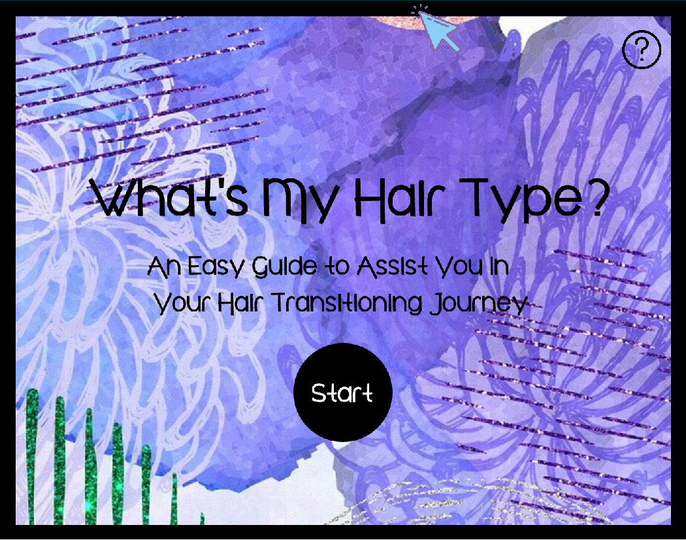
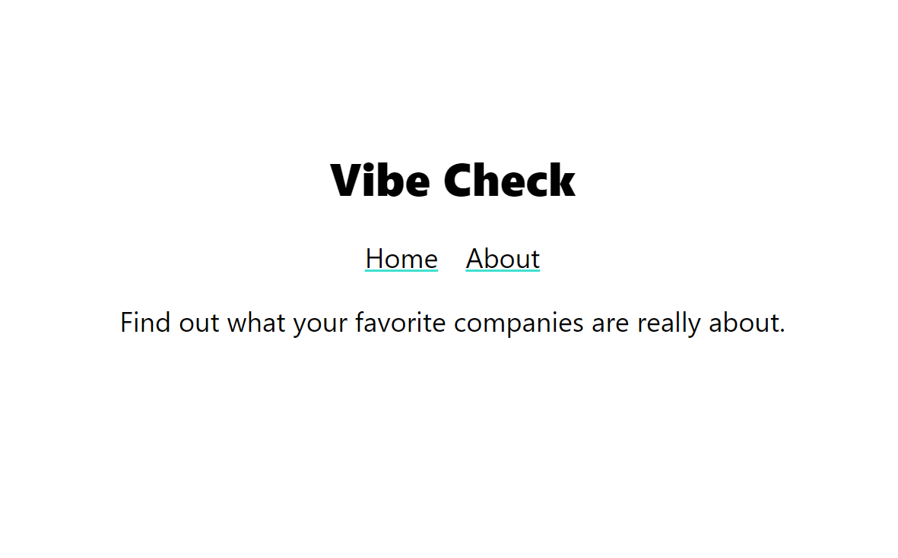

Recent Projects
Natural Hair Love
October 2020 - Present
Project Duration: Ongoing
Keywords: HTML5, Natural-Hair, Simple

Live Preview
Source
This app is a basic quiz that assists those who are trying to transition from checmically treated to natural hair.
Technologies Used:
- HTML5
- CSS
- JavaScript
- P5
- Photoshop
- GitHub
- Audacity
My Role
In this project I oversaw all aspects of development. My intial interest in the topic came from my own personal experience with transitioning into my natural hair. I wanted to create a simple app that gave people the tools they needed for their hair to flourish.
Project Difficulties
The research portion of this project has definitely been the most difficult being that there are so many resources out there with different information.
My Solution
What helped me the most as of now with this app is looking through products that benefit each specific hair type, and going from there.
Notable Features
The dated flash feel really reminds me of older fashion quizzes I used to play as a kid, which is something I really appreciate about this app.
Vibe Check
August 2020 - Present
Project Duration: Ongoing
Keywords: Equity, Consumer, Informative

Live Preview
Source
This app was built in a team of 4, and focuses on delivering important information about companies to consumers
Technologies Used:
- JavaScript
- HTML5
- SCSS
- React
- Node
- Air Table
- Heroku
My Role
In this project I was a lead developer for both the back-end and front-end components. I assisted with developing a front page with both design and code, as well as creating a database to hold all of the information collected. I was also responsible for researching a specific section of the site, specifically company lawsuits.
Project Difficulties
One of the most difficult aspects of this project was learning new coding languages, specifically React and Node. I was unfamiliar with both when starting this app, and had to make sure I learned as much as possible in order to create a more effective app experience.
My Solution
During the development of this app, I participated in weekly pair-programming sessions in order to better understand both coding styles. Working alongside someone allowed me to gain the confidence to work solo for various portions of the project.
Notable Features
This was my first time working with a data visualization tool, and is something I learned to love while developing this app.